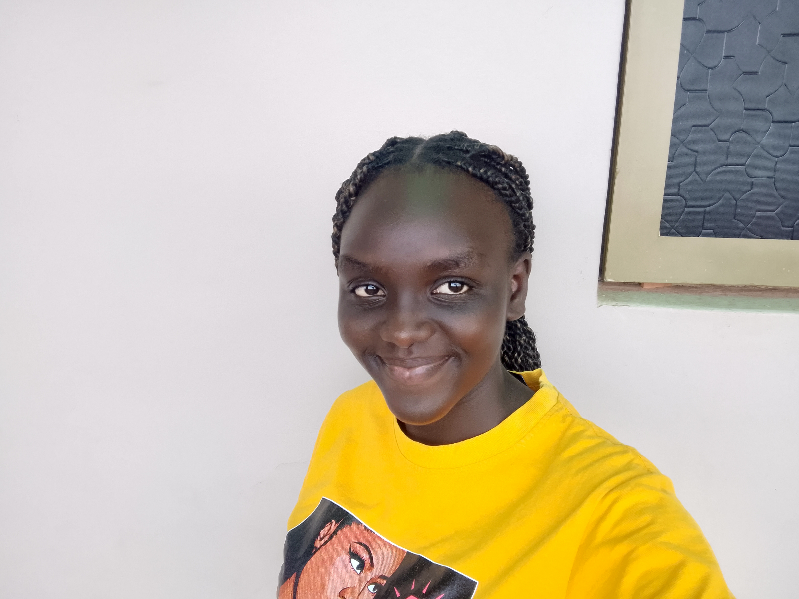

Napio Mercy Elizabeth | WDD 130

My name is Napio Mercy Elizabeth. I am from Uganda currently pursuing a degree in software development at BYU-I. I love adventure, which is what I feel I will be doing through my career in software development. This block, I am learning web fundamentals. Hopefully I will be more experienced by the end of the block about how websites are built.